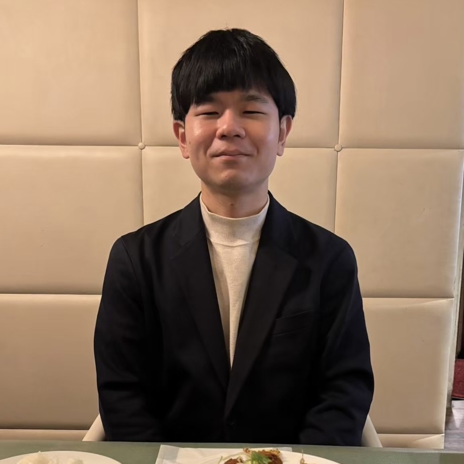

Profile

専門は偏微分方程式論です．現在は中央研究院数学研究所(中華民国)の尤釋賢先生の下でポスドクをしています．
経歴 (CV)
- 2025年8月 - 現在: 中央研究院数学研究所, 博士研究員
- 2022年4月 - 2025年7月: 京都大学大学院 情報学研究科 博士課程
- 2020年4月 - 2022年3月: 京都大学大学院 情報学研究科 修士課程
- 2016年4月 - 2020年3月: 京都大学 理学部
Research
Papers
Preprints
- On strong convergence of an elliptic regularization with the Neumann boundary condition applied to a stationary advection equation [arXiv]
Joint work with Daisuke Kawagoe
Publised or Accepted Papers
- A revisit on well-posedness of a boundary value problem of a stationary advection equation without the separation condition [arXiv]
Joint work with Daisuke Kawagoe
J. Math. Anal. Appl. (2025, Online first).
Presentations
- Convergence estimates for singular perturbation of advection equations with mixed boundary conditions, 京都大学応用数学セミナー, 2025年7月
- Convergence analysis of perturbed advection equations in a bounded domain, 東京大学数値解析セミナー, 2025年7月
- Sharp estimates in singular perturbation applied to the first order partial differential equations in a bounded domain, Days on Diffraction 2025, online, Jun. 2025
- On a Boundary Value Problem of a First-Order PDE and its Regularization Problems, 2024 Japan-Taiwan Workshop on NUmerical Analysis and Inverse Problems, Kyoto, Japan, Mar. 2024
- Convergence Rates of Elliptic/Parabolic Regularization Applied to Advection Equations with Boundary Conditions, The 5th workshop on recent development of mathematical fluid dynamics and hyperbolic conservation laws, Jeju, Korea, Sep. 2023
- 移流方程式に適用された楕円型正則化法の最良収束率について, 日本応用数理学会第19回研究部会連合発表会, 2023年3月
- On Convergence Rates of an Elliptic Regularization Applied to a Stationary Advection Equations, The 13th Taiwan-Japan Joint Workshop for Young Scholars in Applied Mathematics, hyblid, Mar. 2023
- 定常移流方程式の特異摂動解の収束率について（ポスター発表）, 第17回ICTイノベーション 2023年2月
- On Convergence Estimation of Elliptic Regularization Applied to Boundary Value Problem of Advection Equations, 2022 Japan-Taiwan Joint Online Workshop on NUmerical Analysis and Inverse Problem, 2022年3月
- 自然境界条件を伴う楕円型正則化による移流方程式の数値計算, 日本応用数理学会2021年度年会（オンライン）2021年9月
Contact
Email: imagawa[at]gate.sinica.edu.tw
Address:106319臺北市大安區羅斯福路四段1號 天文數學館6樓626